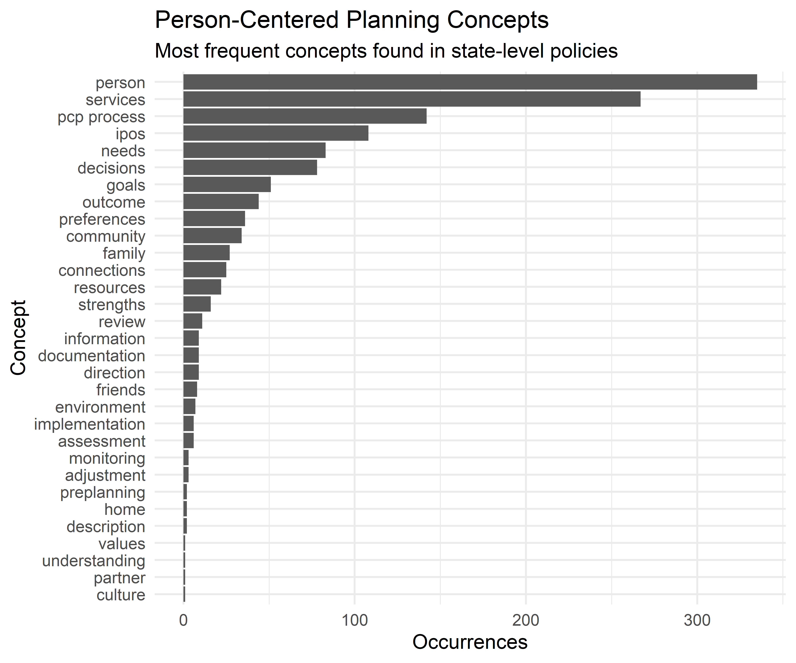

Chapter 3 A Common Body of Knowledge
A foundational effort has been working to develop a shared repository of key terms and concepts, their definitions, and how they are related to one another. This common language has the following key features:
- Relates all terminology back to the person, who is at the center
- Includes concepts related to the PCP process, as broadly defined above, as well as common attributes for understanding the person1
- Promotes consistency in implementation and training, and the scalability of future development
- Allows for change; the language can be extended as new concepts are identified.2
- Reduces confusion across various policies with inconsistent terminology and scope
3.1 What is a Body of Knowledge?
“If you wish to converse… define your terms.”
— Voltaire
While person-centered thinking and planning is important enough to be ensconced in policy and regulation, it is also important enough that is should never become rote, and continue to be a part of a living dialogue. Both dialogue and consistent implementation require a shared language.3 Our purpose here is to identify and define concepts related to person-centered planning by making use of the existing legacy of policy and guidance related to person-centered planning. This will be done in a way which connects core concepts to both state and federal regulations. The collection of core concepts will serve as the foundational outline for a body of knowledge; an evolving outline of understanding about person-centered thinking, planning, implementation and monitoring.4
3.2 Potential Uses
The potential uses of this body of knowledge include the following:
- Policy Search: searching of existing policies in electronic format to allow for identification of requirements related to each key concept
- Impact of Policy Changes: identification of relevant new federal policy requirements to allow for clear understanding of which current policies are related and complicated by the new federal policy
- Basis of Curriculum: serving as the foundation of a standard curriculum to train people receiving services, their families, direct-care team members, supports coordinators, case managers, clinicians, and others about the PCP process.
- Monitoring Quality: allowing for system-level monitoring of the quality of PCP practice, through measurements and/or the use of a best practice review model.5
- Promising Practices: use of key terms for ongoing literature review and meta-analysis of PCP-related practices in the research literature, to build a base of best practices and evidence for effectiveness
3.3 Defining Core Concepts
3.3.1 Identify Core Concepts
In order to begin compiling relevant policies and guidance related to person-centered planning, we needed to select and define an initial set of core concepts related to person-centered planning. The ‘source of truth’ for these concepts was state-level policy in Michigan, since this is the level at which shared dialogue and consistent implementation are sought.
The following method was used to develop this initial set of core concepts:6
- Manual review and annotation of a set of core documents which define person-centered planning in the Michigan Public Behavioral Health System. These include (a) the Person-Centered Planning Policy, (b) the Self-Determination Policy and Practice Guideline, and (c) the Michigan Mental Health Code section 330.1712 Individualized written plan of services.
- Identifying synonyms for core concepts. For instance, the term person was mapped to the similar terms person, personal, patient, individual, client, consumer, recipient, beneficiary. This is being done for all core concepts in order to flag their occurrence across multiple policies.
- Comprehensive annotation of electronic text data for the policies referenced above, to assure that the most commonly used terms and phrases were included as core concepts.

Purposeful Word Choice. When we map multiple terms together as a concept, we inevitably need to select a single ‘master’ term to refer to synonyms and identify their locations across documents with varying authors, terminology, points of view and contexts for implementation. The selection of terms is purposefully opinionated, and attempts to reflect the spirit of person-centered planning defined in the state’s policy. For instance, the term ‘person’ is prefered to various other terms, since these terms tend to view the person from only one vantage point: a participant in an economic exchange, a person requiring help from others, an individual person separated of ties to others. So, while we need to find instances where these words occur in policy, the body of knowledge also intends to approach those policies with a consistent point of view, informed by a consistent set of principles.
Characteristics of a Person. To put the person at the center of the language used, and to do so in way which promotes simplicity, we needed to bring some of the concepts from policy underneath a broader set of terms. With the person as the starting point, we define each person as having the following features:
- definition: a set of characteristics specific to that person, defined by the person and those who know them well.
- connections: the people, places and things which make up the context of a person’s life
- direction: what a person intends for their life to become, by imagining a future and making choices to move toward it
Note that these are features of being human for all of us.
Note that the body of knowledge is not intended to classify services and supports.↩
This approach also requires that ideas claiming to be new must differentiate themselves from existing terms and concepts.↩
According to Will Durant, this requirement is “the heart and soul of [logic], that every important term… be subjected to strictest scrutiny and definition. It is difficult, and ruthlessly tests the mind; but once done it is half of any task.” (cf. The Story of Philosophy, New York, Garden City, 1926, p. 67)↩
Please note that the current work aims at an initial proof-of-concept, and not as a process ready for automation or scaling.↩
This could be developed similar to the MI-FAST model, which has been used to review the fidelity to evidence-based practices.↩
For more complete documentation, see the appendix regarding Detailed Methods.↩